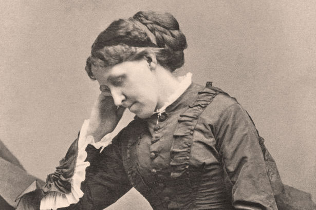

Tribute to Louisa May Alcott

“I've got the key to my castle in the air, but whether I can unlock the door remains to be seen.”
TIMELINE
- November 29, 1932 Louisa May Alcott was born in Germantown, now part of Philadelphia, Pennsylvania to transcendentalist and educator Amos Bronson Alcott and social worker Abby May as the second of four daughters.
- 1860 Alcott began writing for the Atlantic Monthly.
- 1868 The first part of Little Women: or Meg, Jo, Beth and Amy, a semi-autobiographical account of her childhood with her sisters in Concord, Massachusetts, is published.
- 1877 Alcott was one of the founders of the Women's Educational and Industrial Union in Boston.
- March 6, 1888 Alcott died of a stroke at age 55 in Boston, two days after her father's death.